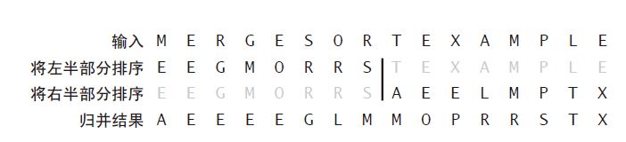
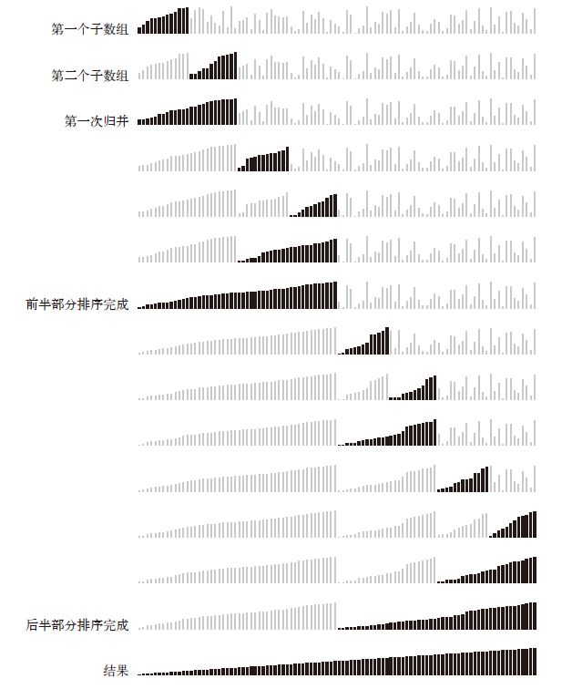
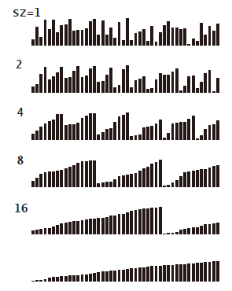

本章讨论的是归并排序算法，它的基本思路是把有序的小数组合并为大数组，同时也使用了递归的思想。归并排序可以保证任意长度为$N$的数组可以在正比于$NlogN$的时间里完成排序，但缺点是所需空间与$N$成正比。

原地归并
原地排序算法： 除了函数调用所需的栈和固定数目的实例变量之外无需额外内存
原地归并的思路并不复杂，先排序前半部分，再排序后半部分，然后不需额外空间的移动数组元素。但在算法实现中这种方案比较复杂。
一种原地归并的抽象化方法，使用了一个辅助数组aux。按照升序排列，两个已经排序好的数组依次比较各元素大小，挑选小的放进去。
1 | public static void merge(Comparable[] a, int lo, int mid, int hi) |
自顶向下的归并排序
递归方法，不断分而治之，直到把数组分为一个个元素再合并起来。
1 | public class Merge |

自底向上的归并排序
自顶向下的方法的合并顺序是按照树的顺序，使用递归的方法左右子树依次合并。而自底向上的归并排序则不是使用递归，而是两两合并，再四四合并，再八八合并，每次合并都是在全数据范围内进行的。
1 | public class MergeBU |

对于长度为N 的任意数组，自底向上的归并排序需要$1/2NlgN$ 至$NlgN$ 次比较，最多访问数组$6NlgN$ 次。
当数组长度为2 的幂时，自顶向下和自底向上的归并排序所用的比较次数和数组访问次数正好相同，只是顺序不同。其他时候，两种方法的比较和数组访问的次序会有所不同
自底向上的归并排序比较适合用链表组织的数据。想象一下将链表先按大小为1 的子链表进行排序，然后是大小为2 的子链表，然后是大小为4 的子链表等。这种方法只需要重新组织链表链接就能将链表原地排序（不需要创建任何新的链表结点）
排序算法的复杂度
没有任何基于比较的算法能够保证使用少于$lg（N!）$～ $NlgN$ 次比较将长度为N 的数组排序。
这个结论可以简单用树结构证明，每一张N个元素的排列方式是一个树的叶子，N个元素共有N！种排列，也就是这个树叶子的数目为N！，如果每一个节点代表比较了两个元素，每个节点比较之后会对应两种结果，也就是这个节点的左右子树。因此基于比较的算法可以表示为一颗二叉树，需要比较的次数就是根到叶子节点的路径长度，该长度最大就是一个二叉树的高度，即lg（N！），根据斯特灵公式可以近似表示为NlgN。对应着N元素数组的最坏情况。
归并排序是一种渐进最优的基于比较排序的算法。
两者的复杂度类似都是$Nlg(N!)$